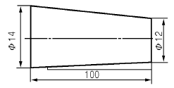
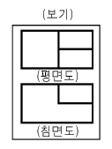
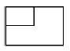
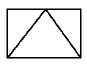
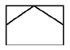
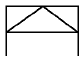
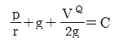

건설기계정비기능사 (2006-04-02 기출문제)
1과목: 건설기계정비(임의구분)
1. 표준내경90mm의 실린더에서 0.28mm가 마멸되었을 때 보링 최적 치수는 얼마인가?
- 실린더 내경을 90.25mm로 한다.
- 실린더 내경을 90.50mm로 한다.
- 실린더 내경을 90.75mm로 한다.
- 실린더 내경을 91.00mm로 한다.
(정답률: 69%)

2. 노즐의 기능이 불량할 때 일어나는 원인을 설명한 것 중 틀리는 것은?
- 연소의 불량
- 노크의 발생으로 기관 출력이 떨어진다.
- 연소실에 탄소가 쌓이면 매연이 발생된다.
- 회전 폭발이 고르지 못하나 출력은 증대된다.
(정답률: 95%)
3. 기관의 회전수가 4,500rpm이며, 연소지연 시간이 1/600초 라고 하면, 연소 지연 시간 동안에 크랭크 축이 회전한 각은?
- 15˚
- 25˚
- 35˚
- 45˚
(정답률: 46%)
4. 연소 실체적이 50cc, 배기량이 360cc인 엔진을 보링한 후에 배기량이 370cc가되었다. 압축비는얼마인가?(단, 연소실체적은변하지않음)
- 7.4
- 8.4
- 9.4
- 10.4
(정답률: 65%)
5. 엔진에서 밸브 간극 조정을 잘못하여 간극이 커졌다. 미치는영향은 어느 것인가?
- 캠(Cam)의 마모가 커진다.
- 캠(Cam)의 마모가 빨라진다.
- 실린더 내에서 밸브 돌출이 커진다.
- 실린더 내에서 밸브 돌출이 작아진다.
(정답률: 37%)
6. 과충전되고 있는 교류발전기는 어디를 정비하여야 하는가?
- 배터리
- 다이오드
- 레귤레이터
- 스테이터 코일
(정답률: 58%)
7. 배터리에 사용되는 전해액을 만들때 올바른 방법은?
- 황산을 가열하여야 한다.
- 철재의 용기를 사용한다.
- 물을 황산에 부어야 한다.
- 황산을 물에 부어야 한다.
(정답률: 76%)
8. 다음 중 프라이밍 펌프의 기능을 설명한 것으로 가장 적당한 것은?
- 공급펌프로부터 연료를 다시 가압하는 일을 한다.
- 엔진이 작동하고 있을 때 연료 공급을 보조한다.
- 엔진이 고속회전을 하고 있을 때 분사펌프를 돕는다.
- 엔진 정지 시 연료장치 회로 내의 공기빼기등 을 위하여 수동으로 작동시킨다.
(정답률: 74%)
9. 기관의 시동을 쉽게 해주기 위하여 사용되는 보조기구 및 방법이 아닌 것은?
- 감압장치
- 예열장치
- 연속촉진제 공급
- 과급 장치
(정답률: 49%)
10. 피스톤링의 절개구를 서로 120° 방향으로 끼우는 이유는 어느 것인가?
- 벗겨지지 않게 하기 위해
- 절개구 쪽으로 압축이 새는 것을 방지하기 위해
- 피스톤의 강도를 보강하기 위해
- 냉각을 돕기 위해
(정답률: 92%)
11. 전기장치에 사용되는 반도체의 설명 중 틀린것은?
- 기계적으로 강하고 수명이 길다.
- 온도가 상승하면 특성이 불량해진다.
- 역 내압이 높다.
- 정격값을 넘으면 파괴되기 쉽다.
(정답률: 45%)
12. 기관 윤활회로 내의 유압을 높이려면?
- 유압조정기 스프링 장력을 세게한다.
- 유압조정기 스프링 장력을 약하게 한다.
- 점도가 낮은 오일을 사용한다.
- 오일 간극을 크게 한다.
(정답률: 90%)
13. 크랭크축 베어링에 스프레드(spread)를 두는 이유가 아닌 것은?
- 베어링과 하우징과의 완전한 밀착을 위해서
- 베어링 조립시 베어링이 캡에 끼워진 채로 있어 작업하기 편리하므로
- 베어링 조립시 크러시가 압축됨에 따라 안쪽으로 찌그러지는 것을 방지 하기 위해서
- 작은 힘으로 눌러 끼워 베어링이 제자리에 밀착 되도록 하기 위해서
(정답률: 42%)
14. 건설기계의 전조등에서 광도부족 원인이 아닌것은?
- 각 배선 단자의 접촉 불량
- 접속 부 저항에 의한 전압 강하
- 장기간 사용으로 인한 전구의 열화
- 전구의 설치 위치가 틀리지 않을 때
(정답률: 75%)
15. 엔진 출력을 저하시키는 직접 원인이 아닌 것은?
- 노킹(knocking)이 일어날 때
- 연료분사량이 적을 때
- 클러치가 불량할 때
- 실린더 내의 압력이 낮을 때
(정답률: 78%)
16. 다음 중 전자제어 엔진에 쓰이는 압력 센서에서의 압력 형식이게이지 압이 아닌 것은?
- 대기압력
- EGR 압력
- 연료압력
- 배기가스 압력
(정답률: 55%)
17. 리드가 8mm 이고, 피치가 4mm 인 수나사를 1/5회전 시키면 몇 mm로 이동하는가?
- 0.4
- 0.8
- 1.2
- 1.6
(정답률: 38%)
18. 토치 작업시 발생하는 역화의 원인으로 거리가 먼 것은?
- 가스의 압력이 부적합하다.
- 팁 끝이 과냉되어 있다.
- 팁의 조임이 완전하지 않다.
- 팁 끝에 오물이 묻어 있다.
(정답률: 62%)
19. 피복아크 용접시 아크 쏠림(Arc blow) 방지대책 중 틀린 것은?
- 긴 용접선의 경우 엔드 탭(End tap)을 사용한다.
- 접지점의 위치를 용접부로부터 멀리한다.
- 아크 길이를 짧게 유지한다.
- 교류용접을 직류용접으로 한다.
(정답률: 60%)
20. 다음그림에서테이퍼는얼마인가?

- 1/100
- 1/50
- 5/100
- 7/100
(정답률: 56%)
2과목: 일반기계공학(임의구분)
21. 절삭공구 중에서 산화 알루미늄(Al2O3)분말을 주성분으로 하여 고온에서 경도가 높고 내마모성이 좋으나 취성이 있어 충격에 약한 공구는?
- 다이아몬드
- 합금 공구강
- 고속도강
- 세라믹
(정답률: 55%)
22. 철강의 5원소에 속하지 않는 것은?
- Mn
- W
- P
- C
(정답률: 63%)
23. ISO 규격에 있는 미터 사다리꼴 나사의 기호는?
- PF
- SM
- Tr
- PT
(정답률: 44%)
24. 비드의 표면을 덮어서 급냉산화 또는 점화를 방지하고 용접 금속을 보호하는 것은?
- 아크
- 용제
- 피복제
- 스패터
(정답률: 85%)
25. 제3각 투상법으로 그린 보기와 같은 도면의 우측 면도로 가장 적합한 것은?





(정답률: 42%)
26. 소성가공에서 냉간 가공이 열간 가공보다 좋은점은?
- 가공하기가 쉽다.
- 연산율이 증가한다.
- 유동성이 좋아진다.
- 가공연이 아름답고 정밀하다.
(정답률: 50%)
27. 6：4 황동에 Fe 1~2% 정도를첨가한 비철금속 재료는?
- 켐잇
- 콘스탄탄
- 인코넬
- 델타 메탈
(정답률: 61%)
28. 2개의 부품 사이의 거리를 일정하게 유지하는데 쓰이는 볼트는?
- 충격 볼트
- 리머 볼트
- 스테이 볼트
- 아이 볼트
(정답률: 70%)
29. 선반의 규격 표시로 맞는 것은?
- 선반의 총 중량과 원동기의 마력
- 선반의 높이
- 주축대의 구조
- 가공할 수 있는 가공물의 최대지름
(정답률: 60%)
30. 다음 중 절삭 조건의 3요소가 아닌 것은?
- 절삭속도
- 이송
- 절삭방향
- 절삭깊이
(정답률: 34%)
31. 양끝에 좌우 나사가 있고 막대나 로프를 죄는데 사용하는 것은?
- 볼트, 너트
- 세트 나사
- 와셔
- 턴 버클
(정답률: 57%)
32. 건설기계 및 자동차 정비 작업장에 준비해야 될 것 중 안전과 관계가 먼것은?
- 응급용 의약품
- 붕산수
- 소화기 및 소화용구
- 방청용 오일
(정답률: 65%)
33. 정작업시 주의할 사항이 아닌 것은?
- 금속 깎기를 할 때는 보안경을 착용한다.
- 정의 날을 몸 안쪽으로 하고 해머로 타격한다 .
- 정의 생크나 해머에 오일이 묻지 않도록 한다 .
- 보관시는 날이 부딪쳐서 무디어지지 않도록 한다.
(정답률: 84%)
34. 화재의 분류 기준에서 휘발유(액상 또는 기체상의 연료 성화재)로 인해 발생한 화재는?
- A급 화재
- B급 화재
- C급 화재
- D급 화재
(정답률: 80%)
35. 마스터 실린더(MASTER CYLINDER)의 조립시 맨 나중 세척은 어느 것으로 하는 것이 좋은가?
- 석유
- 브레이크 오일
- 광유
- 휘발유
(정답률: 62%)
36. 드릴 프레스로 얇은 판에 구명을 뚫을 때 얇은판 밑에 무엇을 받치면 가장 좋은가?
- 나무판
- 무쇠판
- 강판
- 동판
(정답률: 69%)
37. 전기 용접기가 누전이 되었을 때 가장 적절한 행동은?
- 전압이 낮기 때문에 계속 용접하여도 된다.
- 스위치는 손대지 말고 누전된 부분을 절연 시킨다.
- 용접기만 만지지 않으면 된다.
- 스위치를 끄고 누전된 부분을 찾아 절연시킨다.
(정답률: 82%)
38. 노즐 시험기로 노즐의 분사상태 및 분사 개시압력을 측정할 때 안전상 가장 주의해야 될 사항은?
- 분사개시 압력을 측정하는 일
- 펌프의 핸들을 움직이는 일
- 노즐 홀더를 노즐시험기의 고압 파이프에 연결 하는 일
- 연료 분무에 손이 닿지 않도록 하는 일
(정답률: 61%)
39. 기중기 작업 방법으로 틀린 것은?
- 수직으로 달아 올린다.
- 신호인의 신호에 따라 작업한다.
- 제한하중 이상의 것은 담아 올리지 않는다.
- 항상 옆으로 달아 올려야 안전하다.
(정답률: 88%)
40. 기계와 기계 사이 또는 기계와 다른 설비와의 사이에 설치하는 통로는 최소 몇 cm 이상이어야 하는가?
- 40cm
- 60cm
- 80cm
- 100cm
(정답률: 42%)
3과목: 안전관리(임의구분)
41. 차량의 전기장치에서 배선을 제거할 때 주의사항 중 가장 옳은 방법은?
- 고압선을 먼저 제거한다.
- 1차선을 먼저 제거한다.
- 접지선을 먼저 제거한다.
- 2차선을 먼저 제거한다.
(정답률: 80%)
42. 불도저에서 트랙에 오는 충격을 완화시켜 주는 기능을 하는 것은 무엇인가?
- 쇽업소버
- 리코일 스프링
- 스프로킷
- 아이들러
(정답률: 58%)
43. 기중기의 3가지 주요 작동체에 해당되지 않는 것은?
- 하부 주행장치
- 상부 회전체
- 작업장치
- 굴삭장치
(정답률: 76%)
44. 지게차 포크 리프트 상승 속도가 규정보다 늦을 때 점검하는 사항과 거리가 가장 먼 것은?
- 실린더의 누유 상태
- 여과기의 막힘 상태
- 펌프의 토출량 상태
- 작동유의 오염도 상태
(정답률: 69%)
45. 로울러 유압장치 안에 유압의 과도한 상승을 방지하기 위하여 설치한 것은?
- 스프로킷
- 붐(Boom)
- 안전 밸브
- 댐퍼
(정답률: 76%)
46. 18톤급 로우더에서 시동이 거린 상태에서 버킷을 상승시켜 놓고 잠시 후 확인 결과 붐이 상당량 내려져 있었다. 고장 원인이 아닌 것은?
- 작동압력이 규정치 보다 높게 조정
- 실린더 내에서의 내부 누유
- 컨트롤 밸브 스풀의 마모
- 릴리프 밸브의 내부 누유
(정답률: 69%)
47. 베르누이 정리를 옳게 나타낸 것은?(단, A：면적, V：속도, Q：유량, P：압력, F：힘, r：비중량)
- AV=Q
- PA=r

- PV=GRT
(정답률: 59%)
48. 유압식 조향 장치에서 조향 핸들을 돌려도 조향이 불량할 때 내용의 설명 중에서 그 직접원인이 아닌 것은?
- 배관에서 기름이 새고 있다.
- 첵 밸브 불량 또는 조정 불량에 의함
- 펌프 구동용 벨트의 마모 또는 조정불량에 의함
- 조향륜 롤러 면과 로울 스크레이퍼의 사이에 진흙이 지나치게 부착 되어있다.
(정답률: 65%)
49. 유체 클러치에서 와류를 감소 시키는 작용을 하는 것은 어느 것인가?
- 펌프
- 스테이터
- 임펠러
- 가이드 링
(정답률: 56%)
50. 트랙의 장력이 너무 세게 조정되었을 때 마모가 가속되는 부분으로 가장 거리가 먼 것은?
- 트랙 핀과 부싱
- 트랙 링크
- 스프로킷
- 슈우 판
(정답률: 52%)
51. 유압라인에서 고압호스가 자주 파열된다. 그 원인으로 가장 타당한 것은?
- 첵 밸브의 고착
- 감압밸브의 불량
- 릴리프밸브의 불량
- 카운터 밸런스 밸브의 불량
(정답률: 44%)
52. 변속기 케이스에서 입력축을 떼어낼 때 사용되는 플라이어로서 가장 알맞은 것은?
- 니이들 노스 플라이어
- 스냅링 플라이어
- 브레이크 스프링 플라이어
- 다이어그널 플라이어
(정답률: 52%)
53. 도로 주행건설 기계의 유압 브레이크에서 20kgf의 힘을 마스터 실린더의 피스톤에 작용했을 때 제동력은 얼마인가?(단, 마스터 실린더 피스톤 단면적 5cm2, 휠 실린더의 피스톤 단면적은 15cm2이다.)
- 20kgf
- 40kgf
- 60kgf
- 80kgf
(정답률: 57%)
54. 다음 유압펌프 중 가변 용량에 가장 적합한 펌프는 어느 것인가?
- 기어식
- 로터리식
- 플런저식
- 베인식
(정답률: 63%)
55. 유압작동유에 혼압된 공기의 압축 팽창차에 따라 피스톤의 동작이 불안정해지고, 압력이 낮을수록, 공급량이적을 수록, 그 정도가 심한 현상을 무엇이라 하는가?
- 기포 현상
- 캐비테이션 현상
- 유압유의 열화 촉진
- 숨돌리기 현상
(정답률: 47%)
56. 다음의 쇄석기 중 1차 파쇄 작업에 가장 적합한 것은?
- 해머 크라셔
- 로드 밀 크라셔
- 볼 밀 크라셔
- 죠오 크러셔
(정답률: 36%)
57. 덤프트럭의 브레이크 파이프 내에 베이퍼 록이 생기면?
- 제동력이 강해진다.
- 제동력이 약해진다.
- 제동력에는 관계없다.
- 제동이 더욱 잘된다.
(정답률: 86%)
58. 유압조절 밸브의 스프링 장력을 강하게 조절하면 유압은 어떻게 변화하는가?
- 유압이 약간 낮아진다.
- 유압의 저하가 커진다.
- 유압은 상승한다.
- 유압은 변동이 없다.
(정답률: 84%)
59. 굴삭기의 전부장치에서좁은 도로의 배수로 구축 등 특수 조건의 작업에 용이한붐은?
- 원 피스 붐(one piece boom)
- 투 피스 붐( two piece boom)
- 오프셋 붐(offset boom)
- 로터리 붐( rotary boom)
(정답률: 48%)
60. 유압 장치에서 액추에이터(Actuator)란?
- 유압 에너지를 기계적 에너지로 변환시키는 작동체의 총칭을 말한다.
- 압력 에너지를 발생시켜 일의 크기를 결정하는 유압원의 총칭을 말한다.
- 종류로는 압력 제어변, 방향 제어변, 유량 제어변이 있다.
- 임의 크기와 방향과 속도를 결정하는 총칭을 말한다.
(정답률: 80%)